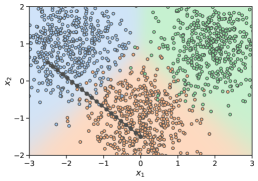

隐层激活特征叠加态
稀疏自编码器与电路分析
探针能定位信息，但模型内部真正的「零件」是特征，而特征是叠加在神经元上的。稀疏自编码器（SAE）把叠加态拆开，让「电路分析」从论文变成可操作的实践。这一页讲清 SAE 为什么必要、怎么训练、特征怎么用、电路怎么挖，以及它至今没跨过的成熟度边界。
一图看懂
神经元的激活是「很多概念叠加在一起」（特征叠加），难以单独分析。SAE 学习一个过完备字典：把每个激活表示拆成「少数几个特征」的线性组合——每个特征对应一个可解释概念，于是电路分析可以在特征层面进行。整条链路：激活 → 拆特征 → 特征归因 → 连电路。
- 编码器映射到过完备字典
- 隐层激活 / 特征叠加态
- 稀疏激活只有少数特征亮
- 编码器 / 映射到过完备字典
- 解码器重建激活
- 稀疏激活 / 只有少数特征亮
特征 1:『引号』- 稀疏激活 / 只有少数特征亮
特征 2:『Python』- 稀疏激活 / 只有少数特征亮
特征 3:『数学公式』- 稀疏激活 / 只有少数特征亮
- 重建激活 ≈ 原激活
- 解码器 / 重建激活
一、特征叠加：为什么神经元说不清
传统可解释性假设「一个神经元 ≈ 一个概念」，但实验发现神经元激活是多概念的叠加（Superposition）：同一个神经元同时响应「引号」「Python」「数学公式」等多种模式。原因很工程化——模型要表达的概念数远多于神经元数，于是把概念「压」进同一组神经元，靠不同激活模式区分。
- 神经元 123 激活神经元 123 激活传统认知（错误）现实（特征叠加）
- = 一个概念
- 神经元 123 激活
= 『引号』0.3+ 『Python』0.5+ 『数学公式』0.2- 神经元 123 激活
到底哪个对？- 传统认知（错误）
- 现实（特征叠加）
- 都不是需要线性分解
- 到底哪个对？
- 稀疏自编码器把叠加态拆开
- 都不是 / 需要线性分解
为什么会叠加？这来自表征维度不足。模型的隐藏维度是固定的（如 4096 维），但模型需要表达的概念数量远超此数。于是优化器找到的折中方案是：让每个概念占据一个「近乎正交」的方向，多个概念可以共用一个神经元的不同激活组合。就像把很多物品塞进同一个抽屉，每个物品有自己的摆放方式，但抽屉本身装了很多东西。
关键直觉：叠加态在数学上是「方向」而非「神经元」。概念 $\mathbf{f}_i$ 是向量空间里的一个方向，激活 $\mathbf{x}$ 是多个方向的线性组合。可解释性要做的事，就是把 $\mathbf{x}$ 分解成 $\sum_i c_i \mathbf{f}_i$，其中 $c_i$ 是第 $i$ 个概念的激活强度。这正是 SAE 做的事。
一句话直觉
神经元是「抽屉」，特征是「抽屉里的物品」。想看清模型在做什么，不能盯着抽屉看，要把抽屉拆开、把物品分类。SAE 就是那个拆抽屉的工具。
如果「叠加态是方向而非神经元」这句话还太抽象，看下面这张论文原图。它来自 SAE 领域的奠基论文《Towards Monosemanticity》，用一个只有 3 类的二维玩具例子展示了「字典方向」的核心思想：左图是原始数据点，中间是学习到的特征方向，右图是重建效果。注意中间那些箭头——它们就像坐标系的轴，任何一个数据点都可以表示成「沿着少数几个轴走多远」的组合，这就是把叠加态拆开的第一步。

看懂这张图要抓住一个点：中间的箭头不是数据点，是「语义方向」。真实模型的残差流是 4096 维，我们没法直接画，但原理完全相同——SAE 学出一组方向（字典向量），把每个激活表示成「沿着哪些方向、各走多远」（稀疏激活）。这张图虽然只有 2 维、3 个类，但它把「用方向说话」这件事演示得清清楚楚：数据没变，只是换了一套更清晰的语言来描述它。
顺带说明：论文原图里这种「二维可画」的示例是为了直观教学，真实 SAE 的字典维度通常是残差流维度的 4-64 倍（比如 4096 维 → 16384~262144 个特征方向），远比这个玩具例子复杂，但「每个点用少数方向组合表示」这一点是共通的。
二、SAE 训练：重构 + 稀疏的双目标
SAE 是自编码器的变体，在中间层加「过完备 + 稀疏」约束：
$$\mathcal{L} = \underbrace{\| x - \hat{x} \|_2^2}_{\text{重构损失}} + \lambda \cdot \underbrace{\| z \|_1}_{\text{稀疏惩罚}},\quad z = \text{ReLU}(W_e x + b_e)$$
- 过完备字典：特征数远多于输入维度（如 4–64 倍），给「每个概念一个专属方向」留足空间；
- 稀疏激活：每个输入只激活极少数特征（top-k 或 L1 惩罚），保证「一次只说一件概念的事」；
- 重构损失：确保拆开之后还能拼回去，信息不丢。
- 残差流激活 xd 维重构：‖x - x̂‖²稀疏：λ·‖z‖₁ 或 top-k正则：防死特征前向传播
- 损失函数
- 前向传播
- 反向传播更新 W_e, W_d
- 损失函数
- 编码器 W_ed → n 特征
- 残差流激活 x / d 维
- 反向传播更新 W_e, W_d
- 稀疏激活 ztop-k 保留
- 编码器 W_e / d → n 特征
- 解码器 W_dn → d
- 稀疏激活 z / top-k 保留
- 重建 x̂ ≈ x
- 解码器 W_d / n → d
2.1 从 L1 到 top-k：两个时代
第一代 SAE 用 L1 惩罚强制稀疏，但有两个问题：L1 会「收缩」所有特征激活值（包括该亮的），且容易出现「死特征」——大部分字典向量从未被激活。第二代（2024 年后主流）改用 top-k 激活：每层前向时只保留激活值最大的 k 个特征，其余强制为零。这样稀疏性由 k 直接控制，训练更稳定。
| 维度 | L1 稀疏 | top-k 稀疏 |
|---|---|---|
| 稀疏性控制 | 通过 λ 间接控制 | 通过 k 直接控制 |
| 激活值偏差 | 整体收缩（biased） | 无收缩（unbiased） |
| 死特征问题 | 常见，需辅助损失 | 大幅缓解 |
| 训练稳定性 | 较敏感 | 更稳定 |
| 代表作 | Anthropic 2023 SAE | DeepMind 2024 TopK SAE |
2.2 一个可运行的 SAE 训练骨架
import torch
import torch.nn as nn
class SparseAutoencoder(nn.Module):
"""Top-K 稀疏自编码器（简化版）
训练目标：
1. 重构：||x - x_hat||^2 尽可能小
2. 稀疏：每个输入只激活 top-k 个特征
"""
def __init__(self, d_model, dict_mult=8, top_k=32):
super().__init__()
self.d_model = d_model
self.n_features = d_model * dict_mult # 过完备：8 倍
self.top_k = top_k
# 编码器（含 bias），解码器为规范化列向量
self.encoder = nn.Linear(d_model, self.n_features, bias=True)
self.decoder = nn.Linear(self.n_features, d_model, bias=False)
def encode(self, x):
"""前向：先算所有特征的 logits，再取 top-k"""
# x: [batch, d_model] -> z_logits: [batch, n_features]
z_logits = self.encoder(x)
# top-k 掩码：只保留最大的 k 个
topk_vals, topk_idx = torch.topk(z_logits, k=self.top_k, dim=-1)
mask = torch.zeros_like(z_logits)
mask.scatter_(-1, topk_idx, 1.0)
z = z_logits * mask # 稀疏激活：只有 k 个非零
return z
def decode(self, z):
"""解码：重建激活"""
return self.decoder(z)
def forward(self, x):
z = self.encode(x)
x_hat = self.decode(z)
return x_hat, z
def loss(self, x):
x_hat, z = self(x)
recon_loss = ((x - x_hat) ** 2).mean()
# top-k 下稀疏性已由 k 保证，无需 L1 惩罚
return recon_loss, {"recon": recon_loss.item()}
def train_sae(model, activations_loader, steps=100_000, lr=1e-4):
"""在残差流激活上训练 SAE"""
opt = torch.optim.Adam(model.parameters(), lr=lr)
model.train()
for step in range(steps):
batch = next(activations_loader) # [batch, d_model]
loss, metrics = model.loss(batch)
opt.zero_grad()
loss.backward()
opt.step()
if step % 1000 == 0:
print(f"step {step}: recon={metrics['recon']:.4f}")
return model2.3 训练要点与常见坑
- 在残差流中间层训练：通常取「layer N 的残差流输出」作为输入，而不是注意力或 MLP 内部激活；
- 批量大、学习率低：批量 4096+，lr 1e-4 量级，训练 10 万步起；
- 防死特征：监控每个字典向量的激活率，低于阈值的向量需要重新初始化（resampling）；
- 逐位置训练：工业实践对每一层、每个注意力输出位置各训一个 SAE，开销不菲；
- 评估质量：用「激活特征的可解释性打分」和「重构误差」双指标，不能只看重构。
展开：新手训练 SAE 最容易踩的五个坑
坑 1：直接用注意力输出而非残差流。新手常对着 model.attn.output 下手，结果特征语义混乱。工业实践锚定在「残差流」上——因为残差流是信息汇聚的干道，特征语义最稳定。锚错位置，后面全白做。
坑 2：top-k 里 k 取太大。k=32 是常见起点，但如果 k 取 256，稀疏性名存实亡，拆出来的还是叠加态。判断标准很简单：跑一批激活，统计平均非零特征数——如果远大于你预期的「少数几个」，说明 k 该调小。
坑 3：只看重构误差，不看可解释性。R² 到 0.97 只能说明「能拼回去」，不能说明「拆得对」。必须抽一批特征人工看 top 激活片段，确认语义是否单一。重构好 + 解释差 = 白训。
坑 4：忽视「特征不稳定」。换随机种子重训，特征集会变。所以工业实践会固定种子、固定数据顺序，并把「特征可复现性」写进评估——否则两周后重训，结论全变。
坑 5：在太大模型上直接开训。在 7B 模型上单层 SAE 约需几十到上百卡时，70B 直接爆炸。新手先在小模型（≤1B）上跑通全流程，验证方法没问题，再上规模。Gemma Scope 这类开源全层 SAE 也是从 9B 起步，先学会用现成的，再谈自己训。
这五个坑共同指向一条原则：SAE 训练是「工程问题 + 判断问题」的混合体——脚本能解决前半，后半需要你肉眼检查特征语义，没有人能替你跳过这一步。
三、特征怎么用：从 SAE 到可解释单元
训练好的 SAE 把每个隐层激活拆成一组稀疏特征。接下来要做三件事：标注特征（这特征代表什么？）、定位特征（什么输入会激活它？）、干预特征（改它会改变什么行为？）。
- 训练好的 SAE
- 标注特征观察激活特征的输入模式给出语义标签
- 训练好的 SAE
定位特征找激活该特征的 token与概念绑定- 训练好的 SAE
干预特征注入/抑制特征激活观察输出变化- 训练好的 SAE
- 特征库 Feature Hub按层 / 语义索引
- 标注特征 / 观察激活特征的输入模式 / 给出语义标签
- 定位特征 / 找激活该特征的 token / 与概念绑定
- 干预特征 / 注入/抑制特征激活 / 观察输出变化
- 电路发现跨层连接
- 特征库 Feature Hub / 按层 / 语义索引
行为控制植入 / 删除概念- 特征库 Feature Hub / 按层 / 语义索引
监控与探测危险概念检测- 特征库 Feature Hub / 按层 / 语义索引
3.1 特征标注：自动化解释
人工逐个标注几十万特征不现实。Anthropic 的自动化解释流程是：取特征的 top 激活文本片段 → 喂给一个大模型（如 Claude）生成解释假设 → 用「模拟激活」验证解释的预测能力——如果解释真的描述了特征，那么模拟出的激活模式应该和真实激活高度相关。这个「解释-预测-验证」循环把特征标注变成了可扩展的流水线。
3.2 特征定位：CLI 级操作
以 OpenAIs 的 TDB 工具和开源社区实践为例，特征定位就是一个「查询 + 观察」的过程：给模型喂一批文本，记录某特征在所有 token 上的激活值，看哪些 token 激活最强，从而推断特征语义。例如「金门大桥特征」在提到金门大桥的 token 上激活最强，同时也在抽象关联（如《雪崩》小说）上有响应——说明模型把概念存储在特征里，且支持抽象联想。
四、电路分析：把特征连成图
单个特征只是「零件」，理解模型行为还需要知道特征之间怎么连接。电路分析的目标：给定一个行为（如「模版匹配→输出」），找出从输入 token 到输出 token 之间，哪些特征参与、按什么顺序激活、彼此怎么影响。
- token 特征『B』『a』『r』『t』
- 子串特征『Bar』『t』
- token 特征 / 『B』『a』『r』『t』
- token 特征 / 『B』『a』『r』『t』
- 概念特征『bart』
- 子串特征 / 『Bar』『t』
- 下一个 token『t』
- 概念特征 / 『bart』
- 子串特征 / 『Bar』『t』
上图展示的是 Anthropic 经典发现的「Indirect Object Identification（间接宾语识别）」电路的一角。实际电路往往包含数百个特征节点，跨十几个层，形成复杂的「特征图」。挖掘电路的两条路径：
- 路径归因（path patching）：把某条路径上的激活替换为「反事实值」，观察输出变化。变化大 → 该路径是因果必须的。
- 特征归因（feature attribution）：用积分梯度等方法，把「输出对输入」的敏感性分解到每个中间特征上，直接得到贡献图。
五、工具链与生态：SAE 实战工具箱
2024-2026 年，SAE 从「论文方法」走向「工程工具」，社区沉淀了一批开源工具。理解这些工具的分工，能帮你快速上手：
| 工具 / 项目 | 类型 | 核心能力 | 适用阶段 |
|---|---|---|---|
| SAELens | 训练库 | 标准化 SAE 训练、评估、加载 | 训练 + 使用 |
| TransformerLens | 机制分析库 | 残差流 hook、激活捕获、路径修补 | 电路分析 |
| Neuronpedia | 特征浏览器 | 海量特征的交互式可视化检索 | 特征标注 / 探索 |
| Gemma Scope | 开源 SAE 库 | Google 发布的 400+ 层位 SAE | 直接使用现成 SAE |
| OpenAI TDB | 特征追踪工具 | 特征激活定位与语义推断 | 行为定位 |
- SAELens配置 + 训练TransformerLens激活数据采集TDB / 自定义脚本行为定位
- Neuronpedia特征检索
- SAELens / 配置 + 训练
- TransformerLens / 激活数据采集
归因分析积分梯度- TDB / 自定义脚本 / 行为定位
- TransformerLens路径修补
- Neuronpedia / 特征检索
六、实战案例：从激活到电路的完整走查
把前面的概念串起来，看一个典型的工作流：假设我们要回答「模型是怎么判断『小金把它送给了小绿』中的『它』指代小金」这种间接宾语（IO）问题。
sequenceDiagram
participant R as 研究者
participant TL as TransformerLens
participant SAE as 已训 SAE
participant M as 模型
R->>TL: 请求捕获 L8 残差流激活
TL->>M: 挂载 hook, 前向输入
M-->>TL: 返回激活张量
TL->>SAE: 编码为稀疏特征
SAE-->>R: 『受事特征』『主格特征』激活
R->>TL: 特征归因: 哪些特征驱动『它』
TL-->>R: 贡献矩阵
R->>TL: 路径修补: 替换 L8→L12 因果路径
TL-->>R: 因果重要度
R->>R: 得出因果假设, 换样例验证
| 步骤 | 工具 | 输入 | 输出 | 典型耗时 |
|---|---|---|---|---|
| 捕获激活 | TransformerLens | 文本 + 层位 | 激活张量 | 秒级 |
| 特征分解 | 已训练 SAE | 激活张量 | 稀疏特征向量 | 毫秒级 |
| 特征归因 | 归因脚本 | 特征 + 输出 | 贡献矩阵 | 分钟级 |
| 路径修补 | TransformerLens | 反事实输入 | 因果重要度 | 分钟级 |
| 验证复现 | 批量样例 | 多组句子 | 统计结论 | 小时级 |
这个流程的产出不是「一张图」，而是一个可验证的因果假设：哪条路径、哪些特征、如何决定输出。它被复现得越多，结论越可信——这也是「电路分析」区别于「相关性分析」的地方。
七、重构损失与稀疏惩罚 λ 的权衡算例
SAE 训练的目标是两个互相打架的量：重构损失要「尽量还原原激活」，稀疏惩罚要「尽量少激活特征」。λ 就是这两者之间的天平旋钮——λ 太小，模型可以激活几百个特征来精确重建，稀疏性荡然无存，特征又回到「叠加态」；λ 太大，模型只敢激活极少数特征，重构误差急剧放大，拆出来的特征虽然稀疏却丢了信息。找到 λ 在哪个量级平衡，是 SAE 训练里最考验经验的环节。
用一个具体算例看这个权衡。假设残差流维度 d = 4096，字典倍数取 8，即特征数 n = 32768。先定两个衡量指标：重构解释率 R²（模型重建的激活能解释原激活方差的比率）和「平均激活特征数」（每个 token 上非零特征的平均个数）。在 L1 稀疏的 SAE 里，把 λ 从 1e-4 逐步调到 1e-2，观察两个数字的变化：λ = 1e-4 时，平均激活特征数高达 200 以上，R² 能到 0.97——重建得很好，但 200 个特征同时亮，等于没拆开；λ = 1e-2 时，平均激活特征数降到 5 个左右，R² 却掉到 0.85 以下——拆得极干净，但约 15% 的激活信息被丢弃，恰恰可能正是关键行为所在。工程上公认的甜区通常在「平均激活 10-50 个特征、R² 在 0.90-0.95」之间，对应 λ 大致在 1e-3 量级。第二代 top-k 方法把这个权衡显式化：直接设 k = 32（每个 token 固定激活 32 个特征），R² 和稀疏性由 k 一个参数同时决定，λ 彻底退出调参舞台。
timeline
title 稀疏化方案的演进
2023 Anthropic L1 稀疏 : 首次把特征叠加拆成可解释特征
2024 DeepMind TopK : 稀疏度由 k 直接控制
2024 BatchTopK : 按 batch 自适应保留 k 个特征
2024-2025 Crosscoders : 跨层共享字典, 降低训练成本
这个权衡还揭示了 SAE 的一个内在矛盾：稀疏性和保真度天然互斥。想拆得更细（每个概念一个特征），就需要更大的字典和更大的 k，但更大的 k 意味着每个 token 激活更多特征，「稀疏」名存实亡；想让重建更精确，就得容忍更多特征同时亮。任何 SAE 配置都是在这个折中曲线上选一个点，不存在「又稀疏又保真」的免费午餐。
展开：λ 网格扫描的实操步骤
实操上，很少有人一次就能选中 λ。标准做法是先做一次粗扫描：取 λ = [1e-4, 3e-4, 1e-3, 3e-3, 1e-2]，每个配置各训一个小的代理模型（比如把 10 万步缩短到 1 万步），记录两个数字——平均激活特征数和重构 R²。把结果画成散点图，你会看到一条清晰的「帕累托前沿」：R² 高的点稀疏度差，稀疏度好的点 R² 低。
选点的原则不是「选 R² 最高」，而是「选 R² 不显著下降前提下最稀疏的点」。比如粗扫描里 λ = 1e-3 时 R² = 0.93、平均激活 28 个特征，λ = 1e-4 时 R² = 0.96 但平均激活 210 个——多数实践者会选前者，因为 0.93 的重建已足够支撑后续归因分析，而 28 个特征的可解释性远好于 210 个。
注意：以上数字是经验参考值，实际甜区随模型规模、层位、字典倍数变化。选好 λ 后还要用「特征可解释性打分」人工抽检，确认高分不是来自巧合的短片段。
八、特征激活的可视化方法
一个商用模型的 SAE 往往有几百万个特征（Gemma Scope 覆盖 Gemma 2 9B 和 27B 的全部层位，公开的特征达数百万个）。特征拆出来了，怎么看、怎么查、怎么确定「这个特征代表什么」，是使用侧的第一道坎。可视化方法大体分四类，按「由粗到细」排列：
核心主题特征可视化
01激活统计
- token 激活热力图
- top 激活片段
02语义推断
- 自动解释
- 模拟激活验证
03特征浏览器
- Neuronpedia
- 按层按语义检索
04干预实验
- 特征注入
- 特征抑制
第一类是激活统计，也是所有人第一步会做的：给模型喂一批语料，记录某特征在哪些 token 上激活最强，把 top 激活片段列出来。「金门大桥特征」这个经典例子就是这么发现的——它在提到金门大桥的 token 上激活最强，同时在抽象关联（如小说《雪崩》）上也有响应。这一层的输出是「一张激活分布图」，它已经能回答「这个特征大概和什么相关」，但回答不了「这个解释对不对」。第二类是语义推断：把 top 激活片段交给一个更大的模型生成解释假设，再用「模拟激活」验证——如果解释正确，把解释喂回去产出的激活模式应该和真实激活高度相关。这层把「看着像」升级成「可验证」。
第三类是特征浏览器：当特征数量到了百万级，人工一个个点开 token 图不现实，于是有了 Neuronpedia 这类交互式检索工具——按层位、按语义关键词、按激活模式相似度检索特征，把「想找某个概念对应哪个特征」变成一次查询。第四类是干预实验：直接往激活里注入或抑制某个特征，观察模型输出变化。注入『Eiffel Tower』特征后，模型在指代消解任务上的回答被改写到埃菲尔铁塔——这是比任何可视化都硬的证据，因为它直接证明了因果作用。四类方法各有限制：激活统计易被少数极端 token 主导、语义推断依赖解释模型本身的能力、浏览器依赖特征库的质量、干预实验最难规模化（每验证一个特征都要跑一组实验）。实际工作流通常是四者组合：先用统计和浏览器圈定候选特征，再用语义推断生成解释，最后用干预实验验证。
九、SAE 与电路分析的关系
第四章的电路分析讲了「怎么挖电路」，但挖电路的节点从哪来？早期工作直接拿神经元当节点，很快撞上特征叠加的墙——一个神经元同时参与好几条「电路」，改它等于同时动好几条线。SAE 的出现改变了这个局面：它把叠加态拆成语义单一的特征，于是电路分析可以在「特征」这个干净的粒度上进行。两者的关系可以概括为一句话：SAE 提供电路图的「节点」，电路分析决定节点之间的「边」。
stateDiagram-v2
[*] --> 激活采集
激活采集 --> SAE 分解 : 残差流激活
SAE 分解 --> 特征库 : 可解释特征
特征库 --> 电路发现 : 路径修补/归因
电路发现 --> 因果假设 : 特征间的依赖边
因果假设 --> 验证 : 批量样例复现
验证 --> 特征库 : 修正特征语义
验证 --> 结论 : 通过
结论 --> [*]
这条流水线最核心的收益是「节点语义单一」。以第四章的间接宾语电路为例：IOI 电路涉及「主格特征」「受事特征」以及两者之间的拷贝路径。没有 SAE 时，研究者只能靠猜测哪个神经元参与哪条路径，而且改动一个神经元会连带影响多条路径；有了 SAE 后，研究者可以直接把「主格特征」注入到目标层，观察它对后续输出的因果影响，路径修补的对象也从「神经元激活」变成「特征激活」——结论的粒度更细，也更可复现。Anthropic 在跨层电路（cross-layer circuit）上的工作，正是建立在这条「特征级节点」的基础上。
但把两者接起来也有代价，最明显的是误差的叠加：SAE 重构本身就丢 5-15% 的信息（见第七章），在 SAE 分解后的特征上做归因，结论的置信度上限天然低于在原始激活上做的分析。另一个问题是特征粒度与电路粒度的错配：SAE 拆出的特征有时太细（一个概念被拆成多个高度相关特征）、有时太粗（一个特征混着多个概念），两者都会让电路图要么碎片化、要么失真。实践中的对策是：先做「特征合并」把高度相关的特征聚成一类，再在合并后的粒度上跑电路分析；同时用路径修补做交叉验证——只有当 SAE 特征层面的结论和原始激活层面的验证对得上时，电路结论才算成立。
十、成熟度边界：SAE 至今没跨过的坎
必须诚实地说，SAE 距离「生产级可解释性」还有明显距离。理解这些边界，才能正确评估它的价值与风险。
- 延迟代价每层 SAE 前向推理开销 +30-50%重构损失只保 85-95% 信息细节丢失特征不稳定换训练种子特征大变样规模上限70B 模型计算成本爆炸
- 难以实时部署做不了在线监控
- 延迟代价 / 每层 SAE 前向 / 推理开销 +30-50%
- 规模上限 / 70B 模型 / 计算成本爆炸
电路分析结论可能不完整- 重构损失 / 只保 85-95% 信息 / 细节丢失
跨模型迁移研究结果不可靠- 特征不稳定 / 换训练种子 / 特征大变样
- 延迟代价：对每个待分析的层位运行一个 SAE 前向，推理开销增加 30-50%。所以 SAE 目前只适合离线分析，做不了实时的「危险行为拦截」；
- 重构损失：SAE 只保留 85-95% 的信息（取决于字典倍数和 k），被丢弃的部分可能恰恰承载关键行为；
- 特征不稳定：同一个模型、同一层，换一个随机种子重训 SAE，得到的特征集可能差异显著——这让「SAE 特征 = 模型真实特征」的论断打折扣；
- 规模上限：在 70B 模型上训 SAE 的计算成本极高（每个层位都要训练一个），开源界目前只有 Gemma Scope 等少数覆盖全层的公开资源。
原论文的保留态度
Anthropic 在 2024 年的 Scaling Monosemanticity 论文中明确表示：SAE 目前「无法可靠地用于监控前沿模型的安全行为」，距离「可解释性驱动的 AI 安全」还有多年研究距离。任何声称「SAE 已能完全理解大模型」的宣传都应打上问号。
十一、前沿方向：2024-2026 进展
尽管有边界，SAE 研究仍在快速推进，几个值得关注的方向：
| 方向 | 核心问题 | 代表进展 | 潜在价值 |
|---|---|---|---|
| 交叉编码器 | 特征能否跨层复用 | Crosscoders 跨层共享字典 | 大幅降低训练成本 |
| 注意力特征 | 注意力头内也有叠加态 | Attn SAE 扩展 | 更完整的电路图 |
| 特征干预 | 能否精确操控行为 | 特征注入 / 抑制实验 | 行为纠偏、安全控制 |
| 可验证可解释性 | 如何证明解释是对的 | 程序化验证特征语义 | 从「感觉合理」到「可证明」 |
| 端到端电路 | 全模型电路是否可图化 | IOI 等电路复现扩展 | 模型行为完全透明化 |
要点速查
- 本质：SAE 用过完备字典 + 稀疏激活，把「特征叠加态」的激活表示拆成少数可解释特征，是特征级可解释性的核心工具。
- 训练公式：重构损失 + 稀疏约束（L1 或 top-k）；top-k 是 2024 年后主流，稀疏性直接可控、无激活收缩。
- 特征三用法：标注（自动解释 + 验证）、定位（查激活 token 推断语义）、干预（注入/抑制特征观察行为变化）。
- 电路分析：路径修补（反事实替换测因果）+ 特征归因（积分梯度分解贡献），把特征连成跨层因果图。
- 工具链：SAELens 训练、Neuronpedia 检索、TransformerLens 分析、Gemma Scope 现成特征库。
- 四大边界：延迟 +30-50%（无法实时监控）、重构丢 5-15% 信息、特征跨种子不稳定、70B 级训练成本爆炸。
- 常见坑：把 SAE 特征当「模型真实特征」（其实依赖训练配置）；忽视重构损失；宣称 SAE 可用于生产安全监控（原论文明确保留态度）。
参考文献与延伸阅读
- Towards Monosemanticity: Decomposing Language Models With Dictionary Learning — Anthropic 第一篇 SAE 论文 · transformer-circuits.pub
- Scaling Monosemanticity: Extracting Interpretable Features from Claude 3 Sonnet — 扩展到商用模型的里程碑 · transformer-circuits.pub
- Learning and Leveraging Features in GPT-2 — OpenAI 的特征归因实践（TDB）· openai.com
- Gemma Scope: Open Sparse Autoencoders Everywhere All At Once — Google 全层位开源 SAE · arXiv:2408.05147
- SAELens 官方文档 — SAE 训练与评估的标准库 · saelens.readthedocs.io
权威延伸资料
围绕“稀疏自编码器与电路分析”继续深入
本章讨论如何知道模型是否真的变好了：基准设计、任务级评测、污染检测、幻觉分析和可解释性工具。
阅读提示：分数不是结论；必须同时报告任务定义、数据来源、污染风险、统计不确定性和人工/自动评审的边界。
- Holistic Evaluation of Language Models (HELM) ↗
将准确性、鲁棒性、偏见、毒性和效率放在统一评测框架中，适合作为基准设计总览。
- Measuring Massive Multitask Language Understanding ↗
MMLU 的任务构成和多学科知识评估方式，帮助理解基准覆盖范围与局限。
- Beyond the Imitation Game: BIG-bench ↗
大规模多任务基准及其涌现曲线，适合讨论任务选择和能力分布。
- TruthfulQA: Measuring How Models Mimic Human Falsehoods ↗
用对抗式问题测量模型复述常见错误信念的倾向，是幻觉与真实性章节的重要对照。
- Inspect AI ↗
开放的模型评测框架，支持任务、评分器、沙箱和轨迹记录，适合搭建可复现实验。
资料优先选用原始论文、官方文档、大学课程和公共机构材料；链接按 2026-08-10 检索，具体版本以来源页面为准。
主题级技术深化
围绕“稀疏自编码器与电路分析”继续深入
发展脉络
稀疏自编码器尝试把稠密激活分解为可命名特征，再通过 feature attribution 与 circuit tracing 连接到行为。
机制抓手
编码器产生稀疏特征，解码器重构激活；需同时报告重构误差、稀疏度、dead features 与干预效果。
工程权衡
更多特征降低重构误差却提高解释负担；自动命名可扩展，但标签可能只是相关描述而非机制。
前沿观察
跨层特征、跨模型对齐和自动电路追踪正在扩展规模，尚缺统一的解释质量基准。
实践检查训练或分析一个小型 SAE，选三项特征做最大激活样本、消融和定向激活对照。